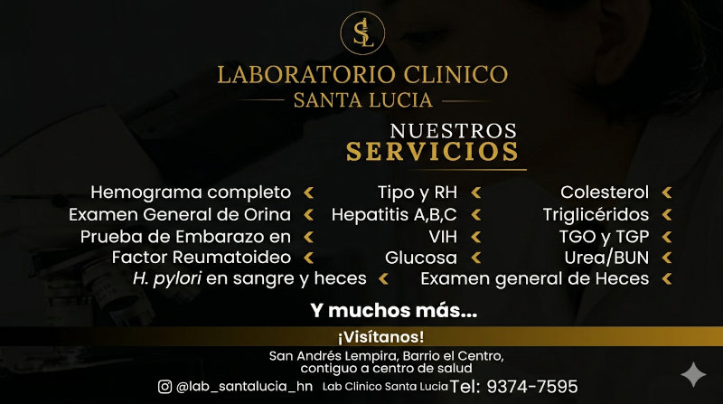
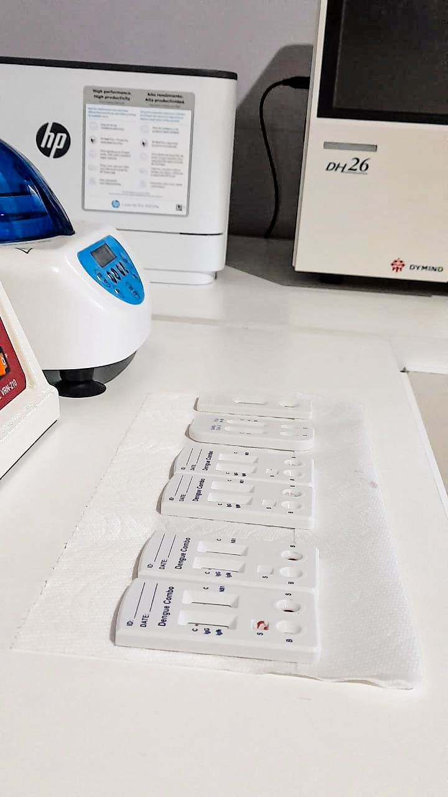
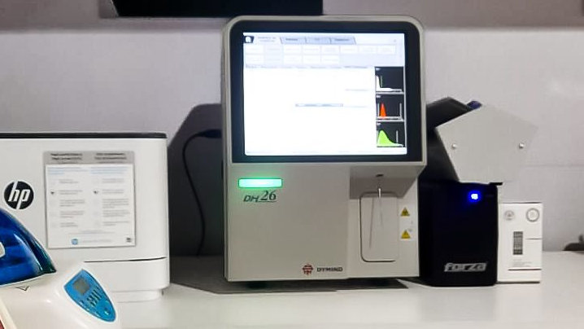
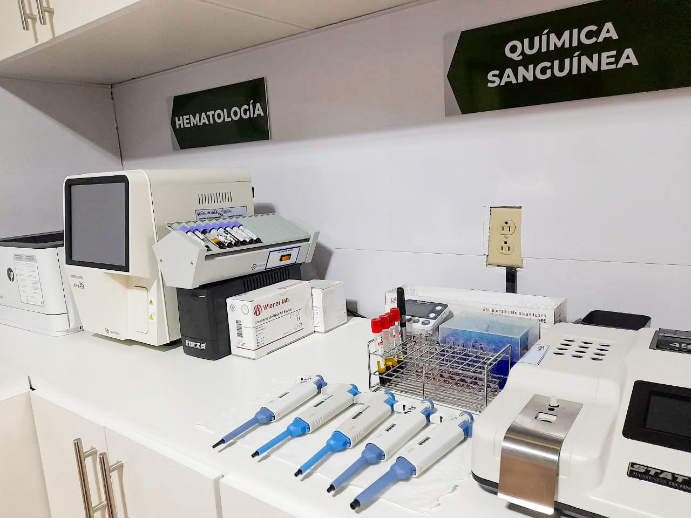
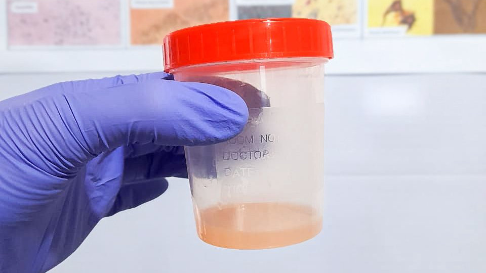
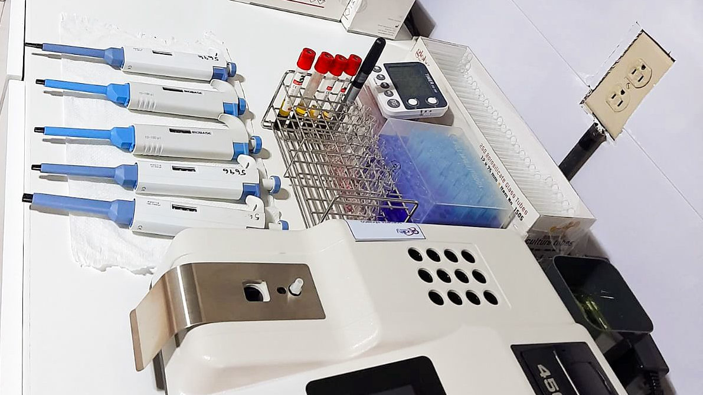

Institucional
Nuestra Cartilla de Servicios
Conoce la amplia gama de exámenes que ofrecemos: desde hemogramas completos hasta pruebas de embarazo y VIH.

Diagnóstico
Detección rápida de Dengue
La importancia de un diagnóstico temprano mediante pruebas combinadas para actuar a tiempo ante virus estacionales.

Innovación
Automatización Clínica
Descubre cómo los analizadores modernos reducen el tiempo de espera y aumentan la confiabilidad de tus resultados.

Servicios
Hematología y Química Sanguínea
Exploramos las principales áreas del laboratorio que ayudan a detectar desde anemias hasta problemas metabólicos.

Consejos
Toma correcta de muestras
Guía rápida sobre cómo preparar y entregar tus muestras de orina y heces para evitar contaminaciones o errores.

Tecnología
Precisión en cada proceso
Contamos con equipos de última generación para garantizar resultados exactos en tus análisis de rutina.